NAVIGATION
TOP of Page
MAIN Page
HOME Page
PREV Page
NEXT Page
ON THIS PAGE
MAP
MURRAY TOWNS
Barmah
Cobram
Strathmerton
Yarrawonga
Lake Mulwala
INLAND TOWNS
Picola
Nathalia
Waaia
Numurkah
Katunga
Katamatite
Tunmgamah
RIVERINA AREAS
Albury-Wodonga
Federation Council
Berrigan Shire
North-West
Campaspe Shire
Moira Shire
Shepparton G.C.
Benalla R.C.
Indigo Shire
Silos & Waterways
|
MAP
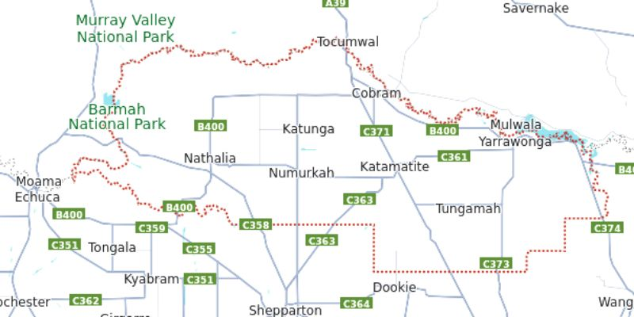
Map of the Moira Shire
TOP
MAIN
HOME
PREV
NEXT
MURRAY RIVER TOWNS
Barmah, VIC has a population of 282 and the distinction of being located north of the border with
NSW, as the border is the westward-flowing Murray River. However, just downstream of Barmah
the Murray winds to the south and east for a short distance before resuming its westward course.
The land within this length of river results in a small part of New South Wales being to the south of
the Victorian town.
Barmah is near the largest river red gum forest in the world. The Barmah National Park is on the
floodplain of the Murray River, and when it floods is an important breeding ground for Murray cod.
The flood is enhanced by the geological features of the riverbed, as the channel narrows at an area
known as the Barmah choke.
The Barmah Forest is listed under the Ramsar Convention for wetlands and, with various state
forests in New South Wales, has been identified as an Important Bird Area. It is rich in bird species
and the breeding ground for the superb parrot, listed as vulnerable on the IUCN Red List.
The geography at Barmah is explained by a geological event that occurred 25,000 years ago, when
an uplift of land along the Cadell Fault forced the Murray River onto a new course for 500 km. The
river had to force its way through the Barmah choke taking over the Goulburn River in the process.
The uplifted land that led to these changes is noticeable as a continuous, low, earthen embankment
along the road leading into Barmah from the west, which appears to the untrained eye as man-made.
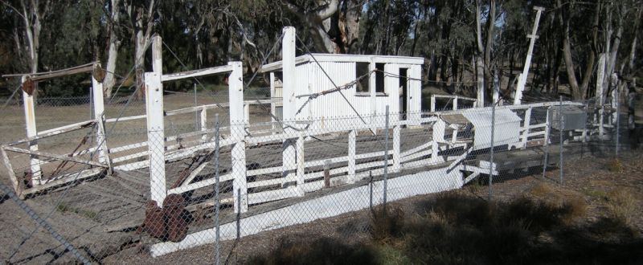
Old Barmah Punt on Murray Street/Barmah Road, Barmah, VIC
(c) Weston Langford Railway Photography
Link to Barmah
Barmah National Park Explore the walking trails through the forests and along the waterways,
following pleasant winding creeks and the Murray River. Visitors can see remnants of the long use
of this landscape by the Traditional Owners in the various oven mounds used for cooking. These
are found along the Lakes Loop Track and Broken Creek Loop Track.
The park wildlife includes an important habitat for waterbirds, with more than 200 species of birds
recorded here. It is one of Victoria’s largest waterbird breeding areas. Birdwatchers can spot a
number of captivating species, including Brolgas, Night Herons, Spoonbills, Sea Eagles and Azure
Kingfishers. Other wildlife including Grey Kangaroos, Emus and Koalas are common.
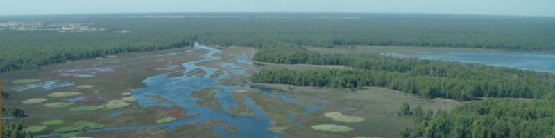
Barmah National Park, just outside Barmah, VIC
Link to Park
TOP
MAIN
HOME
PREV
NEXT
Cobram, VIC has a population of 6,148 and is the second largest town after Yarrawongah.
Cobram serves as the headquarters for the Shire of Moira, is centrally located within the shire Cobram
has one government high school and a primary school, an Anglican prep to year 12 college, a Catholic
Primary School and a Special Developmental School. It also has a district hospital with an
emergency ward and an associated nursing home for the elderly. It is surrounded by a number of
orchards, dairy farms and wineries.
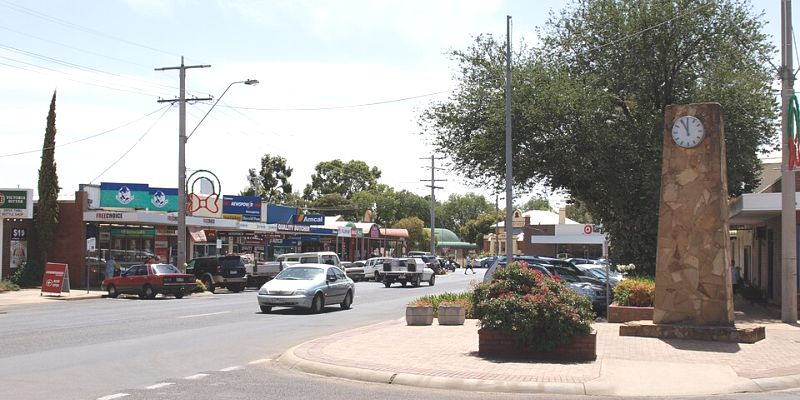
Punt Road, Cobram, VIC
By Toxation - Own work, Public Domain,
https://commons.wikimedia.org/w/index.php?curid=5772163
Link to Cobram
Cobram is the birthplace of Murray Goulburn Co-operative,Australia's largest dairy co-operative,
collecting 35% of Australia's milk produced through its numerous facilities throughout south
eastern Australia. Murray Goulburn, along with the Meiji Dairy Corporation milk processing plant,
the Saputo Dairy Australia factory, a large abattoir and orange juice factories form the major
industries of the town as well as serving as major employers.
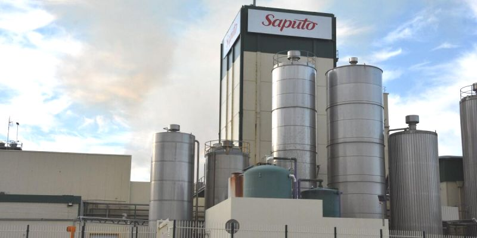
Saputo Dairy factory at Cobram, VIC
A Peaches & Cream Festival is held biennially around the second or third weekend in January. It is
Australia's oldest-running festival, with a town parade and music festival located at Thompson's
Beach on the Murray. There are numerous recreational facilities for public use, such as Scott
Reserve, the Cobram Showgrounds and Cobram Lawn Tennis Club.
Cobram Barooga Bridge In 2006, the then 104-year-old De Burgh Truss road bridge over the
river was replaced by a concrete type immediately adjacent to and upstream of the original bridge,
named Cobram Barooga Bridge. The new bridge was built to a cost of $9.6 million and completed
ahead of schedule.
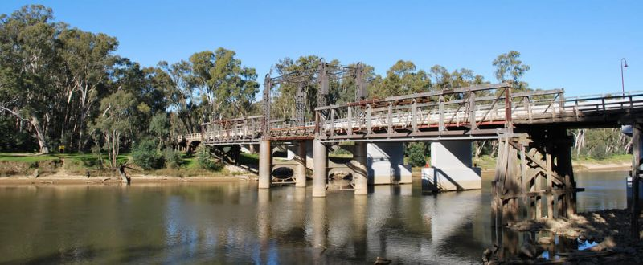
Cobram, VIC Truss Bridge, with the new Concrete Bridge located behind
TOP
MAIN
HOME
PREV
NEXT
Koonoomoo The Big Strawberry is located at 1436 Murray Valley Highway, Koonoomoo, phone
(03)5748 4321. The fully air conditioned premises sells a range of homemade Jams, Relishes,
Chutney's, Wines and Liqueurs. You can pick fresh strawberries when available. There is a
playground for the kids and a man-cave for the men, plus a little history explaining the business.
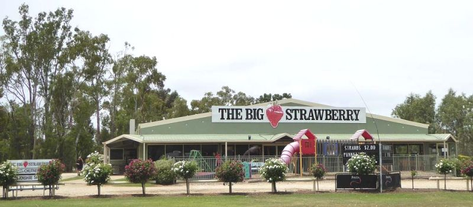
The Big Strawberry at Koonoomoo, VIC
Link to Strawberry
Strathmerton, VIC is located on the Murray Valley and Goulburn Valley Highways 11 km west of
Cobram and has a population of 1072. The Kraft factory in Strathmerton was acquired by Bega
Cheese in December 2008 with Bega claiming that production will double in the following five
years. The town is served by the Strathmerton Primary School. Other industries include the Booth
Transport Milk Transfer Depot.
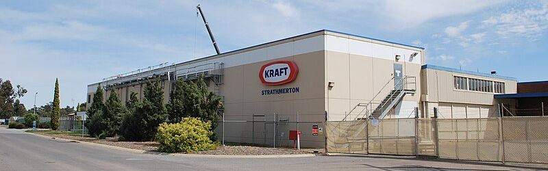
Kraft Factory at Strathmerton, VIC
Link to Strathmerton
Cactus Country has a 5 hectare display garden is a desert oasis that features thousands of cacti
and succulents. Follow the sandy trails that transport, visitors to the landscapes of Mexico and the
United States. There is a Mexican restaurant, bar and gift shop located on the property.
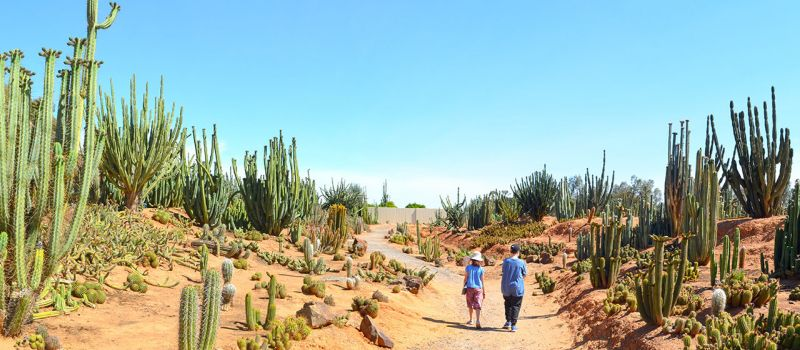
Cactus Country at Strathmerton, VIC
Link to Cactus Country
TOP
MAIN
HOME
PREV
NEXT
Yarrawonga, VIC has a population of 7,930 and is served by a standard gauge branch railway,
which branches off the Melbourne-Sydney line at Benalla and terminates at Oaklands, NSW. The
lake features majestic and ghostly river red gums. Close to town it is enjoyed for water skiing,
sailing, swimming, canoeing, fishing and cruising.
Downstream, the Murray River is popular for camping, hiking, bike riding and all sorts of water
activities and holidays. Upstream the lake disappears into a wonderland of protected water and
wetlands at the junction of the Ovens and Murray Rivers.
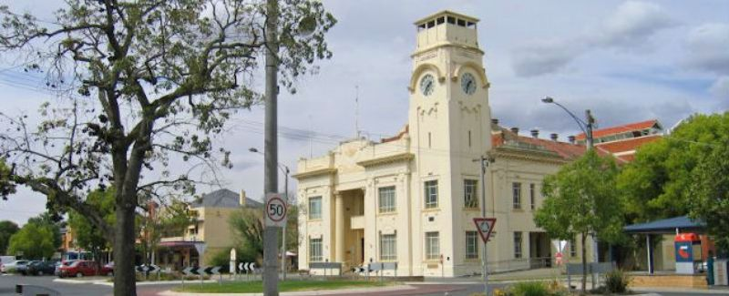
Town Hall on the corner of Belmore and Orr Streets, Yarrawonga, VIC
Link to Yarrawonga
Link to Yarrawonga
Byramine Homestead and Brewery is located at 1436 Murray Valley Highway, Yarrawonga, VIC.
Phone (03) 5748 4321. It is open to the public as an enchanting memorial to those early pioneering
days of so long ago. While visiting the Byramine Homestead you can enjoy a range of Morning
Tea's, Ploughman’s Platters, or light lunches off our main menu. Within the grounds is a Brewery,
visitors are welcome to sample the boutique range of beer, wine and cider.
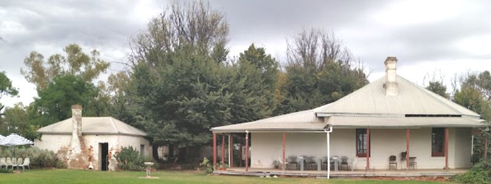
Byramine Homestead at Yarrawonga, VIC
(c) Robert R
Link to Byramine
Lake Mulwala is Yarrawonga's main attraction, formed by the damming of the Murray River. The
lake is a popular location for activities such as boating, kayaking and fishing. There are two
crossings of the Murray between Yarrawonga and Mulwala; across the weir (a stock route carrying
a single lane of traffic); and a bridge over Lake Mulwala. This bridge contains an unusual bend and
dip in the middle, a result of miscommunication between the two state governments.
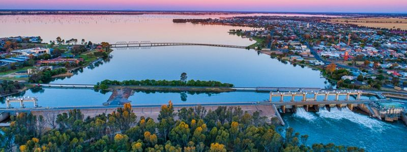
Lake Mulwala at Yarrawonga, VIC
Link to Lake
TOP
MAIN
HOME
PREV
NEXT
INLAND TOWNS
Picola, VIC has a population of 206, with a mixture of irrigated, wheat and timber milling farms.
At the 2011 census, farming accounted for 37.2% of employment, with 9.9% dairy farming. Picola
is serviced by two return V/Line coach services on weekdays originating in Barmah: both connect
in Shepparton, with train services to Melbourne Southern Cross station. Picola Public Hall hosts a
monthly old-time dance featuring local bands and musicians, as well as themed dances during holidays.
After the silo art project in Picola was completed in December 2020 as part of the Silo Art Trail,
Picola has experienced a tourism boom, leading to owner Bruce Agnew refurbishing and reopening
the Picola Hotel on 17 November 2021. Painted by Jimmy Dvate, it features flora and fauna from
the Barmah National Park. There are plans to paint a second mural.
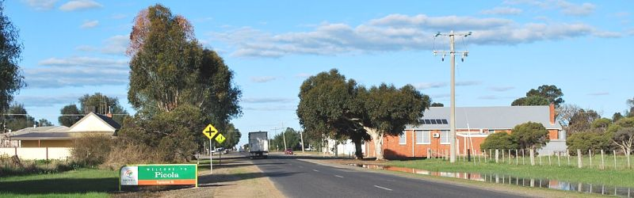
Moran Street / Barmah-Picola Road in Picola, VIC
By Mattinbgn - Own work, CC BY 3.0,
https://commons.wikimedia.org/w/index.php?curid=16171973
Link to Picola
Nathalia, VIC has a population of 1,982. It is situated on the Broken Creek about 20 mins drive
from the gateway to the Barmah National Park. Agriculture is the mainstay of the Nathalia area's
economy, particularly cropping, dairy farming, and grazing. Some of the town's major businesses
are Rex James Stockfeed, Trans Tank International (TTi), Remax Products, and Ryan's abattoirs.
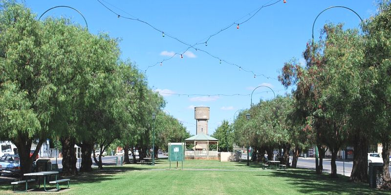
Park in the middle of Blake Street / Murray Valley Highway in Nathalia, VIC
By Mattinbgn - Own work, CC BY-SA 3.0,
https://commons.wikimedia.org/w/index.php?curid=14777359
Link to Nathalia
Link to Nathalia
The Barmah Forest Heritage and Education Centre is a large building featuring displays on
the history and the environment of the nearby Barmah Forest and Barmah National Park. The
centre opened in 2011 with funding from the Victorian government and the Moira Shire Council. A
feature of the building is the use of Redgum timber recycled from the old wharf at Echuca. It is
open from 9.00am-5.00pm every day, so drop in, grab a map and discuss taking a tour on the
Kingfisher cruise through the wetlands, lakes and the Barmah Choke on the Murray River.
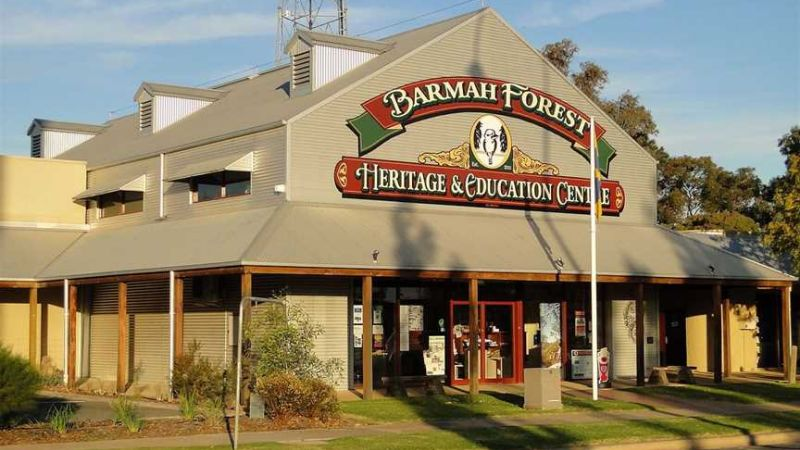
Barmah Forest Heritage and Education Centre in Nathalia, VIC
Link to Centre
The Goulburn River and Lower Goulburn National Park is only a short drive from Nathalia
and is a good fishing and camping destination. The Murray River is a short 15-minute drive from
Nathalia and is always a very popular destination for camping, water skiing and fishing.
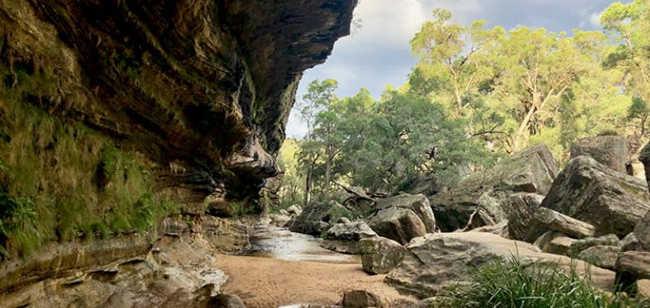
Lower Goulburn National Park
Link to Park
Link to Park
TOP
MAIN
HOME
PREV
NEXT
Waaia, VIC has a population of 390. The area is home to mainly irrigated dairy farms. The town
consists of a school (established 1890), a hotel and an Australian rules football ground, along with
around 10 houses. Waaia is home to an annual tractor pull, organised by the local community action group.
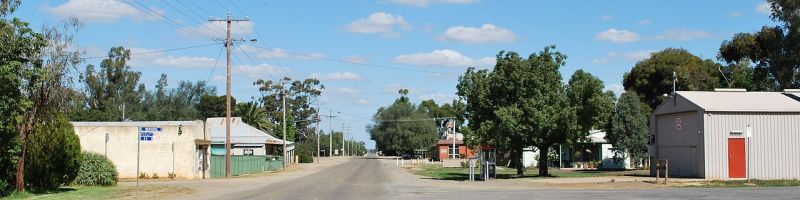
Waaia-Bearii Road, Waaia
By Mattinbgn - Own work, CC BY-SA 3.0,
https://commons.wikimedia.org/w/index.php?curid=14721129
Link to Waaiaa
Numurkah, VIC has a population of 4,768. It became the headquarters of the Murray Valley
Soldier Settlement Area - one of the largest soldier settlements in Australia - after World War I.
Under this scheme 700 ex-servicemen were given land to develop for agriculture. Devastating
floods in 2012 saw a large portion of the town flooded including the local hospital which was
demolished and has since been rebuilt.
Numurkah lies on the floodplain of the Broken Creek, which flows into the Murray River just north
of the township of Barmah. The riparian area adjacent has a dominant over-storey of Eucalyptus
camaldulensis (Red Gum). Above the floodplain tree species include Eucalyptus microcarpa (Grey
Box), Eucalyptus melliodora (Yellow Box) and Callitris glaucophylla (Murray Pine). Adjacent to the Golf Course, is also one of the easternmost remnants of the Northern Plains Grassland community known as the Numurkah Grassland. It is home to many native wildflowers and grasses such as Billy Button, Small Vanilla Lily, Everlasting etc.
There is a small roosting population of Grey-headed flying foxes (Pteropus poliocephalus) and Little
Red flying foxes (Pteropus Scapulatus). These mega-bats are important pollinators of native tree
species. Their diet is nectar, pollen, and fruit. The Little Red flying fox has translucent wings and
eats nectar from flowers almost exclusively. Numurkah also is home to many species of insect
eating microbats (small bats) with the Goulds Wattled Bat being the most common. These small
bats live in tree hollows and play an important role in insect control by eating large quantities of
insects each night.
Numurkah & District Historical Society Museum at 118-120 Melville Street was formed in
1964 and located in the original 120 year old Bank of Victoria building. Permanent displays include
police cells, isolation/medical ward, tool-shed, dairy shed, bedroom, laundry, kitchen, bathroom.
They also regularly change displays in their front room.
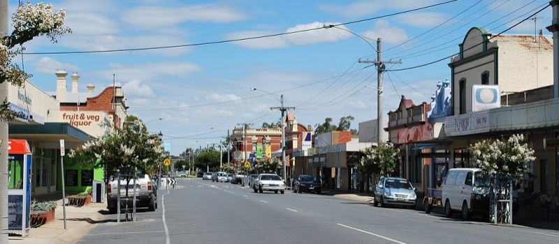
Melville Street in Numurkah, VIC
By Mattinbgn - Own work, CC BY-SA 3.0,
https://commons.wikimedia.org/w/index.php?curid=14001313
Link to Numurkah
Link to Numurkah
TOP
MAIN
HOME
PREV
NEXT
Katunga, VIC has a population of 996. The local railway station was opened on the Goulburn
Valley Railway in 1888, but today does not see regular passenger services. Katunga, similar to
much of the surrounding area, is based on agriculture including dairy production.
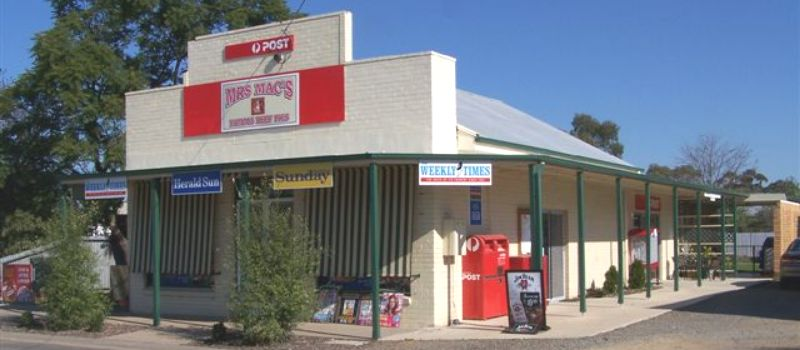
General Store on 11 Katunga Road North in Katunga, VIC
Link to Katunga
Katamatite, VIC has a population of 433. The local GrainCorp Grain Silo is now the 16th silo to be
painted for the Painted Silos Art Trail.
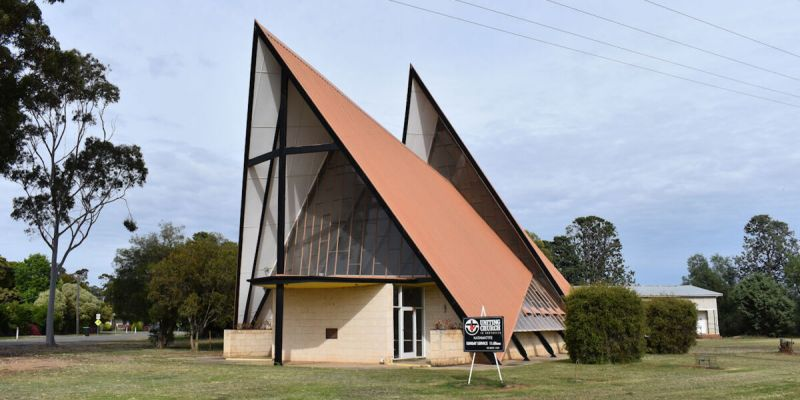
Uniting Church on Beek Street / Benalla-Tocumwal Road in Katamatite, VIC
Link to Katamatite
Tungamah, VIC has a population of 355 and sits on the banks of Boosey Creek. Major industries
in the Tungamah area include grain production, wool growing, dairy farming and sheep and beef
farming. Tungamah has a railway freight station with a silo on the Oaklands railway line, Victoria.
A daily passenger bus service runs between Benalla and Mulwala (NSW)
Tungamah is home to the first silo to be painted in north-east Victoria and the beginning of the
North East Victoria Silo Art Trail. The silos are privately owned and Western Australian street
artist Sobrane Simcock was commissioned to paint them in 2018. The murals show a Laughing
Kookaburra and dancing Brolgas.
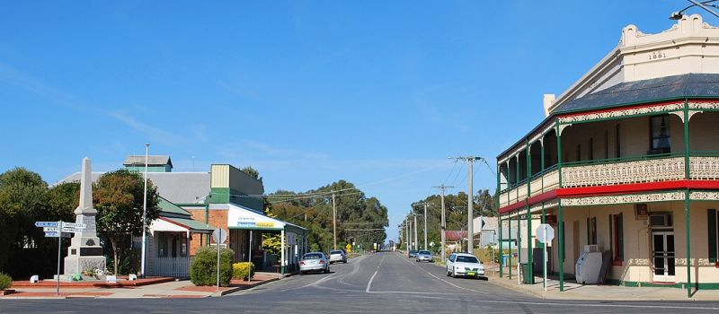
Middleton Street / Tungamah Main Road in Tungamah, VIC
By Mattinbgn (talk · contribs) - Own work, CC BY 3.0,
https://commons.wikimedia.org/w/index.php?curid=19382203
Link to Tungama
TOP
MAIN
HOME
PREV
NEXT
|